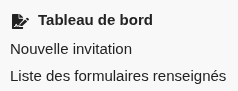
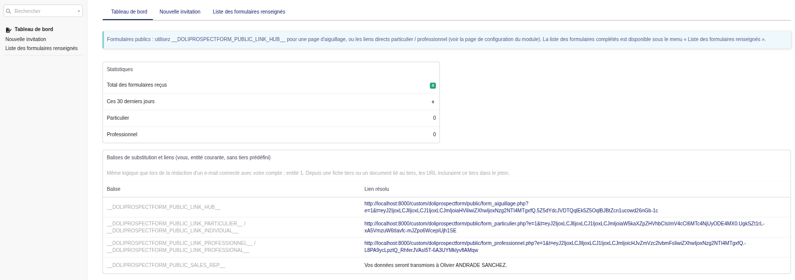
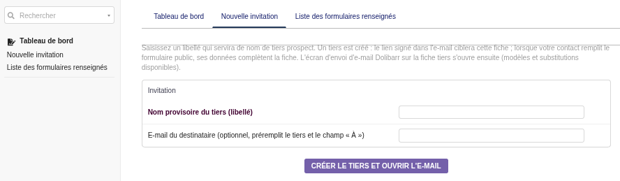
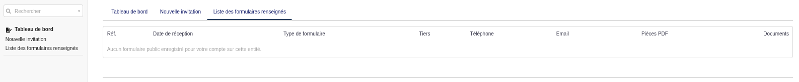
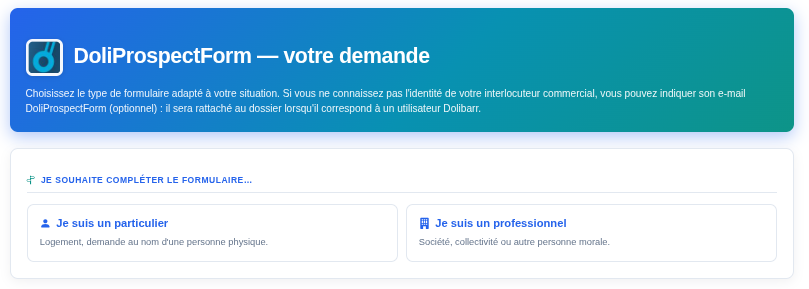

Questa guida presenta il modulo dal punto di vista dell’utente finale: a cosa serve, come usarlo quotidianamente e dove trovare le azioni principali in Dolibarr.
DoliProspectForm consente di proporre ai prospect moduli pubblici utilizzabili senza accesso a Dolibarr: possono inserire i propri dati e allegare documenti (ad esempio bollette energetiche in PDF) direttamente da un link che inviate loro.
Persona fisica: identità, indirizzo e allegati.
Società (ricerca per ragione sociale o identificativi se disponibili), sede legale, referente e allegati.
È possibile offrire una pagina di scelta: il prospect seleziona il tipo di modulo adatto alla propria situazione prima di proseguire. I dati alimentano in Dolibarr la scheda terzo, il contatto e i file sulla scheda, a seconda dello scenario.
| Ruolo | Uso tipico |
|---|---|
| Amministratore | Attiva il modulo, configura moduli, testi, notifiche e link «anonimi» se necessario. |
| Commerciale / utente business | Usa link firmati o inviti, consulta gli invii ricevuti. |
| Prospect (esterno) | Apre il link, compila il modulo e invia gli allegati, senza account Dolibarr. |
Il modulo compare nel menu principale con una voce dedicata (etichetta tipo «DoliProspectForm» a seconda del pacchetto lingua).
Impostazioni avanzate (moduli attivi, durata dei link, utente tecnico, testi, modello di notifica, e-mail di fallback, ecc.) sono nella configurazione del modulo.

img/screenshot-menu-module.png
img/screenshot-tableau-de-bord.pngDalla scheda di un terzo, i tag di sostituzione possono inserire link alla pagina di scelta, al modulo privato o a quello aziendale. Il commerciale corretto è associato al caso in base al contesto.
Il vostro amministratore può indicare quali tag usare (schermata di aiuto o configurazione).

img/screenshot-invitation.png
img/screenshot-submissions.png
img/screenshot-form-aiguillage.png — modulo pubblico o hubL’elenco dei moduli pubblici completati mostra tipo, data, terzo, numero di allegati, in base ai permessi Dolibarr.
Le notifiche e-mail possono avvisare il commerciale identificato, altrimenti un indirizzo di fallback impostato dall’amministratore. Il contenuto dipende dal modello e-mail selezionato.
Per il funzionamento funzionale del modulo o i permessi Dolibarr, contattate l’amministratore dell’istanza o il vostro integratore.
Documento per utenti business e funzionali. Non sostituisce la documentazione amministratore né le linee guida interne della vostra organizzazione.